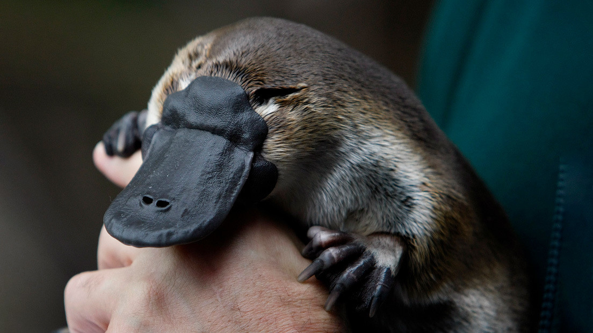
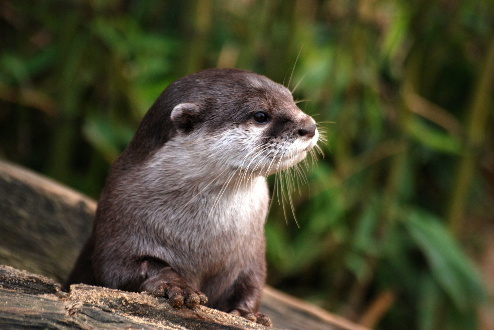
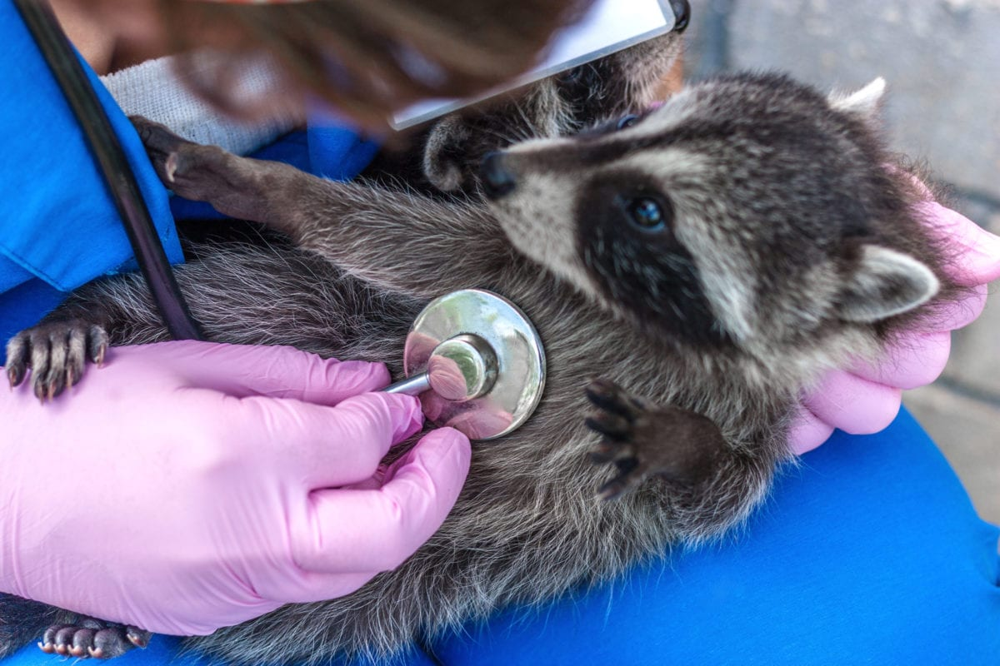

Nuestro sistema de adopcion funciona como un apadrinamiento,
tu puedes adoptar uno de los animales que se muestran a continuacion y ayudarlo de forma monetaria a poder rehabilitarse

Nuestro ornitorrinco mosiah tiene problemas en sus patas traseras

La nutria ariel nesecita aprender a cazar en manada

El mapache sebastian tiene una infeccion en el ojo y no puede verEl dragon de komodo juan sufrio una perdida de una de sus patas delanteras